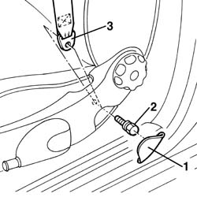
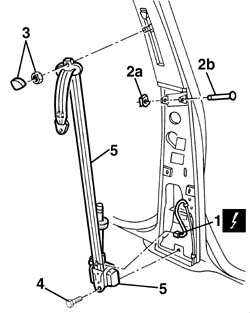
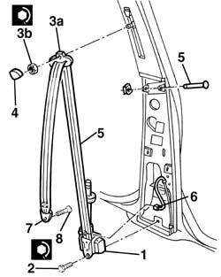

7065A12 front seat belt (one), lh or rh, with pretensioner on wheel - r r
- Path
- Procedures > 70 FITTINGS > 7065 SEAT BELTS AND ACCESSORIES > 7065A FRONT SEAT BELTS > 7065A12 front seat belt (one), lh or rh, with pretensioner on wheel - r r
- Kind
- repair procedure (removal / refitting; the operation number is the code)
- Applies to
- all engines; all production periods
- Interactive page
- https://sloeber94.github.io/elrnDB-a156/en/#/3238970
Applies to: all engines; all production periods
Applies to: all engines; all production periods
 Removing
Removing
 Refitting
Refitting- 7040L44 rear compartment scuff strip - r r
7040H36 central trim lower element - r r
1. Remove screw cover badge from front seat.
2. Unscrew screw.
3. Remove safety belt edge from seat.

Applies to: all engines; all production periods
1. Disconnect electric connection.
 | Name | Connector |
|---|---|---|
1 | Driver's seat belt pre-tensioner |
| Name | Connector |
|---|---|---|
1 | Front passenger seat belt pre-tensioner |
2. Remove spring (2a) and extract passing pin (2b).
3. Remove badge and unscrew nut.
4. Unscrew screw.
5. Remove safety belt with pretension rod.

Applies to: all engines; all production periods
Place pretension rod back in its ad hoc box by putting it on a clear surface.
Applies to: all engines; all production periods
Refitting
Removing1. Position pretension rod again.
2. Tighten screw to the prescribed couple.
 | Fastening | Component | Ø | Value (daNm) |
|---|---|---|---|---|
- | Bolt | FRONT SEAT BELT PRETENSIONER. | - | 3.6 - 4.4 |
3. Position safety belt rebound (3a) and tighten nut (3b) to the prescribed couple.
| Fastening | Component | Ø | Value (daNm) |
|---|---|---|---|---|
3b | Nut | FRONT SEAT BELT IDLER. | - | 3.6 - 4.4 |
4. Put badge on.
5. Insert passing pin and put spring on.
6. Connect electric connection.
7. Place safety belt edge on seat.
8. Tighten screw to the prescribed couple.
| Fastening | Component | Ø | Value (daNm) |
|---|---|---|---|---|
8 | Bolt | FRONT SEAT BELT END'. | - | 3.6 - 4.4 |
Put screw cover badge on.

Applies to: all engines; all production periods
7040H36 central trim lower element - r r
- 7040L44 rear compartment scuff strip - r r
Connect battery.
Check system functionality by using Examiner or other diagnosis instruments.